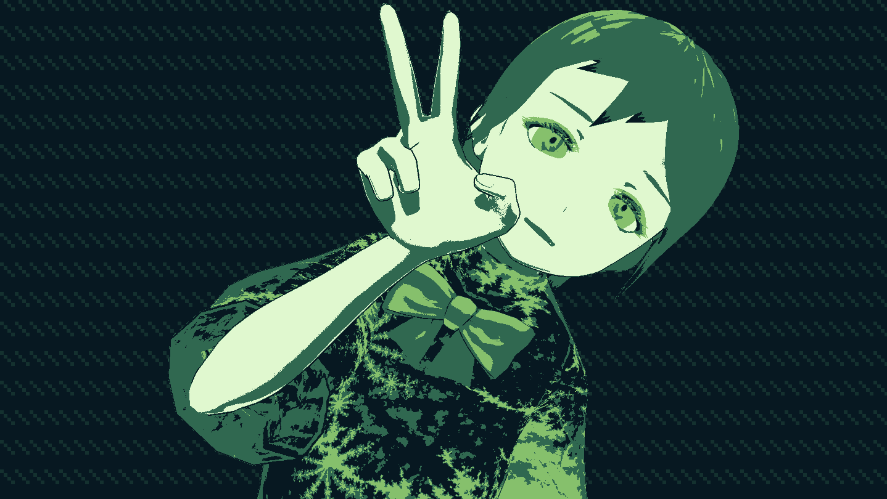

New Garenburg game, Garenburg Penitence artbook/novelization, and more!

Hello there! Been a little while since the last news update, I didn't even write one for when Garenburg Penitence released... Very weird to not be writing "yes it's still in development," but here we are!Garenburg Penitence - Post-release RamblesGarenburg...
Read More
9 Year Anniversary & Announcements!
Hello everybody! Today makes nine whole years of publishing and releasing games under Creatalsoftware, nearly a whole decade! That's a shockingly long time. So, as is tradition, I have some stuff I'd like to do to somewhat celebrate the occasion with some...
Read More
Revamped Websites, Merch, & Bluesky!
Hello everybody!Today marks the launch of a bunch of website revamps and the like for our stuff! The main website at garenburg.com has been completely overhauled and redone, complete with new links and features and more. In addition, you can see all of th...
Read More